This is a searchable transcription of the original PDF for convenient reading on phones and computers. Page numbers refer to the original document. Charts are reproduced from the original PDF; the three tables (pages 14, 22 and 31) are transcribed as text, with a link to each original table image. The original PDF is the authoritative formatted edition.
ECONOMIC RESCUE PLAN
Reform UK’s Plan to Save Britain’s Economy
October 2026
Foreword by Robert Jenrick MP
Britain’s public finances are in a parlous state. Mismanagement and cowardice by successive Chancellors have left us £3 trillion in debt, with soaring inflation, and a collapse in consumer confidence. Monthly borrowing costs have reached record levels. Meanwhile, the tax burden is at its highest level since the 1940s.
This happened for one reason: Westminster is addicted to spending – but not on the services that matter to the British people. Under George Osborne’s supposed “austerity”, foreign aid spending expanded dramatically, while military spending was frozen. Andy Burnham has already overseen the early release of thousands of prisoners, due to mass immigration and a simultaneous failure to build prisons, while his Foreign Secretary pledges almost £90 million to Gaza. Just last year, taxpayers spent £12 billion, or £414 per household, on benefits for foreign nationals.
John Healey has a chance to break from decades of failed consensus. To gain the confidence of voters, he will need to deliver meaningful tax relief for ordinary people. To earn the confidence of bond markets, and in turn to lower borrowing costs and return money to people’s pockets, he will need to keep control of borrowing. To do both, he must meaningfully reduce spending, including on welfare. And do so now.
The odds are not in his favour. Just like Rachel Reeves, he is trapped by a Parliamentary Labour Party unwilling to countenance meaningful spending cuts, especially to their beloved benefits budget.
Unsurprisingly, everything reported so far suggests John Healey will dodge the tough decisions needed to put our economy back on solid footing. A ‘mañana budget’ would be a cowardly abdication of his duty to safeguard the country’s finances.
We can’t continue like this. The economy needs a rescue plan. Working people need a lifeline. This Economic Rescue Plan represents Reform’s alternative proposals. Unlike the other parties, we are unwilling to allow Britain to go gently into the good night of managed decline. We are unwilling to allow the working people of this country to be immiserated. Therefore, we present this coherent, fully-costed plan to deliver substantial tax relief and debt reduction, rescuing both the Exchequer and household budgets.
Reform won’t flinch from taking the decisions needed to put us on a better footing. We will confront out-of-control spending straight away - slashing the ballooning benefits bill, cutting foreign aid and ending net zero subsidies - so we can give households £1,300 in tax relief.
Our proposals are accompanied by more than 60 individual job-creating measures that will free up the economy. That means bringing down the tax burden, bringing down inflation, and bringing down interest rates. The result will be a vibrant, growing private sector that delivers well-paid jobs for British citizens.
Britain is broke. Britain needs Reform.
Rt. Hon. Robert Jenrick MP
Reform UK’s Shadow Chancellor
Introduction
For most working people, the cost of living is a daily reality and a daily worry. Diesel is £2.00 per litre, a homemade ham and cheese sandwich costs 30-40% more than five years ago1, a 500g pack of beef mince from the supermarket will now set you back over £3,2 and a Freddo - having already been subject to shrinkflation - retails for up to 45p.3 The average pub pint, meanwhile, has risen from under £4.00 to around £5.20.4
Yet for many politicians, the cost of living is little more than a buzzword, something to which they pay lip service in TV studios. Instead of doing things to help cut the cost of living, like cutting taxes on working people and family businesses, and paying for this by cutting wasteful spending, they keep doing the opposite. Now even the triple lock - a cost-of-living protection for pensioners who have worked hard and paid in all their lives - is under threat from Andy Burnham.
When prices and taxes go up, establishment politicians like to point the finger at factors beyond Britain’s control, such as Russia’s invasion of Ukraine in 2022 and the crisis in the Strait of Hormuz which began earlier this year. That way everyone in Westminster can carry on as before. No course correction is needed because no course correction is possible.
In reality, Britain is so exposed to international crises because of the policies pursued by Conservative and Labour governments, not just over the last few years, but over the last three decades.
Low-skilled mass migration has been used to artificially inflate GDP, paper over the structural weaknesses of our stagnant economy and undercut British workers’ wages. Net Zero has given us deindustrialisation, swathes of job losses and the highest energy costs of any developed country. Wasteful spending - on foreign aid, on welfare for foreign nationals, on the quango state - has yielded mountains of debt, mutinous bond markets and the highest tax burden since the 1940s. All the while, our armed forces have been gutted.
What all these things have in common is that they flow from the shared priorities and preoccupations of the Westminster political establishment. Politicians for whom virtue-signalling on the global stage is more important than raising living standards at home in Britain. Politicians whose lives revolve around London and who don’t understand the concerns of hardworking people in Britain’s towns and villages. Politicians who’ve never run a business, or had to make payroll, or pour a pint.
The people whose living standards are being robbed by inflation and taxes to pay for international do-goodery and grand schemes like Net Zero are ordinary British taxpayers: people who get up and go to work while it’s still dark out, who work hard and save (when they can), who start businesses and take risks, and who take responsibility for themselves and their families rather than expecting the state to take care of them for their whole lives.
They are the people who are struggling to make ends meet. People who are having to make sacrifices to pay the bills each month. And life shouldn’t just be about scraping by. People who work hard and do the right thing should be able to afford a holiday abroad, to go out for family meals, to do Christmas without racking up credit card debt. Of course, Labour’s latest tax-raising wheeze is a tax on holidaying in England that could add £100 to the cost of a two-week holiday for a family of four.
For Labour, the real priority is those on welfare, including over 1.4 million foreign nationals on working-age benefits.5 It’s reported that planned savings to the benefits bill will not materialise until 4 years time, meaning it’s on track to rise by £70 billion to £406 billion by 2030.
For the Tories, they have abandoned the middle classes to act as a metropolitan pressure group for the very wealthiest. Under Kensington Kemi’s plans, the wealthiest two percent
would do very well, even as millions more end up paying an extra £265 a year in income tax due to her refusal to unfreeze the tax-free personal allowance.
If a Reform Government were delivering the Budget this week, things would be very different. We would be delivering an Economic Rescue Plan prioritising working Britain: electricians, nurses, publicans, farmers, police officers, hairdressers, shop owners, and everyone else whose hard work keeps Britain ticking over.
We would help with the cost of living pressures workers and their families are facing right now by cutting taxes and energy bills (funded by cutting wasteful spending). We would also immediately ease the tax and regulatory pressures on small businesses - the lifeblood of our economy - so they can start growing and creating jobs and opportunities again.
But crucially, if implemented, our Economic Rescue Plan would also get Britain back on the right track over the longer term, through fiscal discipline and a series of pro-growth, pro-jobs measures. The average Briton is 30% (or £11,000) worse-off today than they would have been had the pre-Blair trend of growth continued since 1997.6 And what do we have to show for it as a country? Again, this was not inevitable but is rather the result of the policy priorities pursued by the Uniparty over the last 30 years.
This plan represents a big change. The type only Reform can deliver. But it’s time we prioritised British workers and British businesses. It’s time we cut the cost of living, rein in our reckless and feckless state and get the country back onto the pathway of long-term economic growth and rising living standards that we were led away from.
The Situation
Britain is broke. On 21 October, our public sector net debt ticked over £3 trillion for the first time – more than £100,000 per household. Relative to GDP, debt is at its highest level since the mid-1960s, when we were still recovering financially from the Second World War. Since the millennium, under both Labour and Conservative governments, this country has only once run an overall surplus.
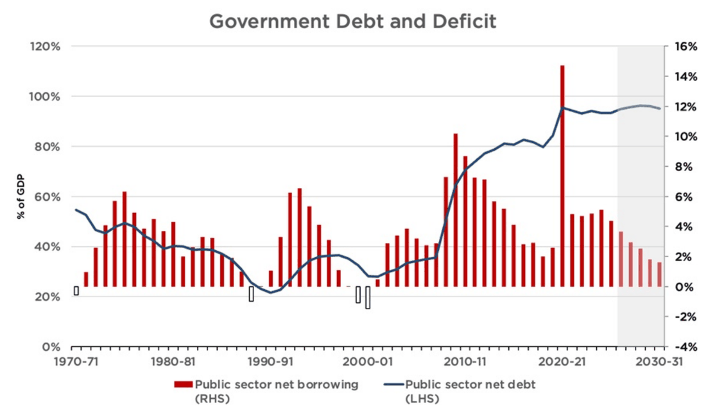
This is unlikely to improve soon under Labour. Even the OBR’s optimistic forecasts suggest net debt will stay around 95% of GDP in the short term. Longer-term forecasts show that our public finances are highly unsustainable. By the 2070s, the OBR expects the public debt to be more than three times the size of the economy.
As our debt has grown, so too has the interest rate we pay on it. The yield on 10-year gilts is at its highest level since the Global Financial Crisis. Yields worldwide have increased this year. Several factors have contributed, including rising policy rates from global central banks and growing worries about the fiscal sustainability of many Western governments. But the UK remains an outlier. In fact, we currently pay higher yields than every other G7 country on our 10- and 30-year debt.
Why? Largely because overseas lenders don’t trust their money will be safe or retain its value here. Repeated policy mistakes – including the Truss mini-budget debacle, but also the Bank of England’s consistent failure to meet its inflation target – have undermined global confidence in British sovereign debt and the value of sterling. As a result, lenders demand a premium to lend their money to us.
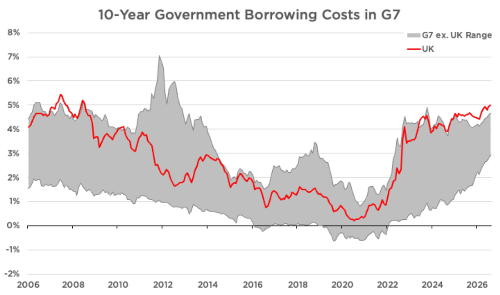
This has a real cost. High interest rates on government debt mean higher taxes and less money for public services. They also drive up the interest rates that businesses and homeowners pay on their loans. That slows down the real economy, suppresses investment, and makes us all poorer.
High interest rates and slow economic growth are a particularly toxic combination. Together, they can lead to an unsustainable debt spiral, where eventually governments run out of options. Such a spiral threatens the state’s ability to perform its basic functions, such as defending the Realm, while meeting its obligations to lenders and pensioners. It may even demand external intervention, such as the 1976 IMF bailout of Britain or the 2010s bailouts of Greece.
Our Choices
To rescue Britain, we must borrow less, grow more, and control inflation.
To borrow less will require either higher taxes or lower spending. But Britain’s taxes are at their highest level since the late 1940s, thanks to Rishi Sunak and Rachel Reeves. These taxes are crushing ordinary working families, whose tax-free personal allowance has been steadily eroded by inflation. At the same time, high taxes disincentivise work, investment, and risk-taking: The core ingredients of economic growth. Therefore, we cannot reduce borrowing with higher taxes.
Instead, we must cut public spending substantially. To find savings, we have focused on areas of public spending that do not deliver value to British taxpayers, especially welfare, Net Zero, foreign aid, and the overgrown public sector. This paper lays these out in detail.
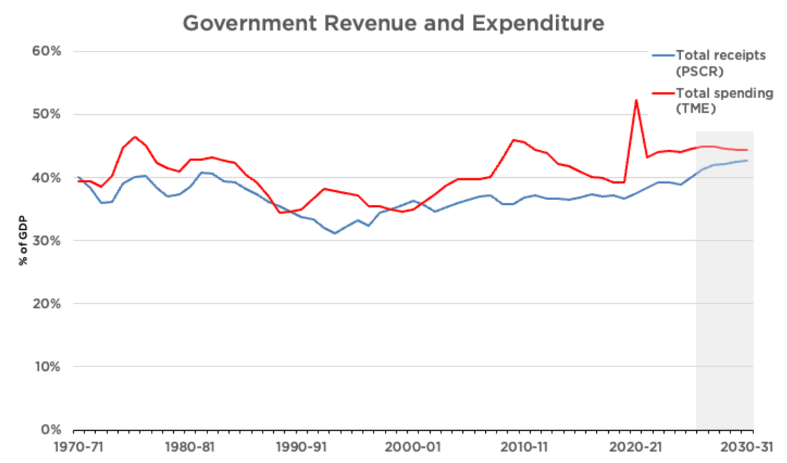
These savings are so substantial that we can achieve two goals at once: Reducing borrowing and cutting taxes. This includes increasing the tax-free personal allowance to £15,000 and scrapping the green levies that drive up energy bills. These substantial, funded tax cuts will relieve pressure on households while improving the incentive to work.
At the same time, we need to get control of inflation and grow the economy. We cannot juice the economy by simply flooding it with money. That would require more borrowing, increase prices, and put further pressure on household budgets and interest rates. Instead, we need proper supply-side reform. That will grow the productive potential of the economy, allowing the two objectives to be met at the same time.
That means reversing course on the post-1997 regulatory record of Labour and the Conservatives. This includes abolishing Net Zero to drive up energy production and reduce bills. It means unblocking the sclerotic planning system and freeing up the labour market by abolishing Angela Rayner’s job-destroying employment laws. It also means getting British people back into work whilst protecting the vulnerable through welfare reform.
Labour’s Choices
Labour has chosen the path of least resistance. Unable to convince their backbenchers to support modest welfare reforms, Keir Starmer and Rachel Reeves instead chose to impose a brutal death tax on family farms and businesses and continue Rishi Sunak’s freeze of tax thresholds. Meanwhile, Andy Burnham has announced a plan (with a £17 billion hole in it) to cut pensions to fund an illusory social care system. Even his even-more-moderate plans to cut welfare spending actually increase spending immediately.
The Conservatives’ Choices
After 2020, the Conservatives lost what limited control they had over both the borders and the tillers. It was under the Conservatives that the major explosion in public debt occurred.
The Conservatives’ failures were not bad luck, they were a deliberate set of destructive policies over fourteen years that they now have to take responsibility for. In those years they borrowed every single year and added more than £1.6 trillion to the national debt taking it from 64% to 94% of GDP. They passed around 400 tax-raising measures7 and took the tax burden to the highest level since the early 1950s, when Britain was repaying its vast war debts. They froze the personal allowance, a stealth tax that by 2027-28 will drag 5.2 million people into paying income tax.8 On immigration, the betrayal was even stronger. Every one of their five manifestos promised to cut immigration, and three of them promised to bring net migration down to the tens of thousands.9 David Cameron called it a promise to the British people: “No ifs. No buts.”10 Instead, net migration peaked at 944,000 in the year to March 2023,11 nearly ten times the level they had promised.
Today, they claim to have found religion when it comes to fiscal sustainability. But their savings do not add up, and their tax cuts show entirely skewed priorities. They have chosen to prioritise tax cuts for the wealthiest 2 per cent of homeowners or those earning over £100,000, over tax relief for ordinary working people. It is the manifesto of a party confined to central London and the leafiest suburbs of the South-East.
Cutting Your Taxes
Since 1997 all but two Parliaments have overseen the expansion of the tax burden as a share of the economy. Overall, it has increased from 29.6% of GDP to a forecast 38.3%. Today, the tax burden in Britain is at its highest level since the immediate aftermath of the Second World War.
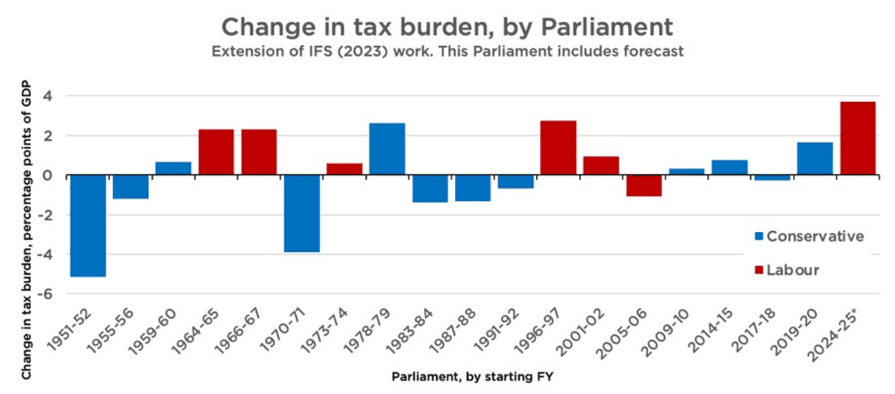
High taxes dent the incentive to work and simply make families poorer. Therefore, Reform would take immediate steps to reduce the tax burden on ordinary British families.
We would:
1.Increase the tax-free personal allowance to £15,000
2.Cut household energy bills by £250 and business bills by even more
3.Abolish the Energy Profits Levy that is destroying our oil and gas industry
4.Increase the VAT threshold to £150,000
5.Make the 5p cut to fuel duty permanent
6.Scrap Rachel Reeves’ job tax on British workers, funded by a new levy on migrant workers
7.Stop taxing overtime earnings
8.Save our pubs with a focused relief package, including a cut to beer duty in pubs
9.Scrap the death tax on family farms and businesses
Increasing the Tax-Free Personal Allowance to £15k
The personal allowance is the amount of income you do not have to pay income tax on. It has been frozen at £12,570 since 2021. Each passing year means more of your money is taxed in real terms.
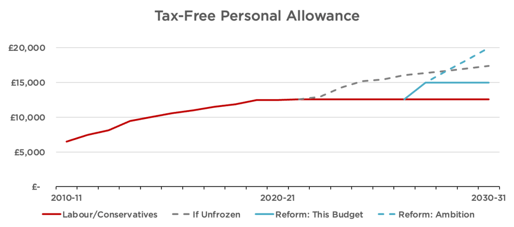
We will increase the tax-free personal allowance to £15,000. This change would deliver a £486 tax cut to most taxpayers and take 2.9 million taxpayers out of income tax altogether. It would also make sure the state pension is untaxed for the entire OBR forecast window. It would reward work and give people money to spend in their local high streets and on the things that matter to them.
This would repair much of the damage done by successive chancellors’ neglect. It would be the single largest increase in the Personal Allowance in history. In the longer run, we would aim to increase the allowance to £20,000, as the fiscal situation allowed.
This change would apply to income tax only and would not affect the higher rate threshold (which will stay at £50,270). The personal allowance taper would be retained at £1 in forgone personal allowance for every £2 over £100,000.
| Income | Existing Personal Allowance | Personal Allowance under Reform | Tax Saving |
|---|---|---|---|
| £10,000 | £10,000 | £10,000 | £0 |
| £14,000 | £12,570 | £14,000 | £286 |
| £20,000 | £12,570 | £15,000 | £486 |
| £40,000 | £12,570 | £15,000 | £486 |
| £70,000 | £12,570 | £15,000 | £486 |
| £100,000 | £12,570 | £15,000 | £486 |
| £120,000 | £2,570 | £5,000 | £486 |
| £127,000 | £0 | £1,500 | £300 |
| £130,000 | £0 | £0 | £0 |

Cutting Energy Bills by £250
The cost of energy in Britain is a national crisis. Successive Conservative and Labour governments have layered cost upon cost onto bills in the name of Net Zero, with little regard to the struggles of the British billpayer that bears them. This is crushing household budgets and undermining British business. Britain’s electricity prices for industry are the highest in Europe – and are more than twice those paid by French firms.12 Subsidies and grid integration costs for green energy are expected to cost £40 billion a year by 2030.13 Our gas prices are also much higher than in other gas-producing countries, such as Canada and the United States.14 60% of British businesses cite the price of energy as a concern facing their business.15 High energy prices have already killed off much of the British chemicals and fertiliser sector – and they are threatening to do the same to the manufacturing industry too.16
Our proposals under this heading would save households £250 per year on their energy bill. They would also save businesses substantial amounts and revive British industry.
First, we would abolish Britain’s two headline carbon taxes: The Emissions Trading Scheme and Carbon Price Support. Exactly how we abolish the ETS will depend on legal advice.17 Assuming a benchmark household consuming 3,100 kWh of electricity per year, these taxes add c. £90 per year to energy bills, assuming gas generation sets the wholesale cost of electricity the vast majority of the time.
Second, we would remove policy costs from gas and electricity bills. This includes Renewables Obligations, Feed-in Tariffs, the Warm Home Discount, and the Green Gas Levy. Together, these represent an extra c. £80 on household energy bills, assuming benchmark consumption rates for gas and electricity. This Plan would shift these costs to the Treasury while we repeal statutory obligations to fund these programmes.
Third, we would remove VAT from all energy bills. Reform UK was the first party to call for the removal of VAT from energy bills. Thankfully for consumers, Labour has started to copy our plans, but they do not go far enough. This Labour government has only committed to removing VAT for 6 months, and only from electricity bills. A complete removal of VAT from both domestic electricity and gas bills represents another c. £90 per year saving for the British billpayer.
Abolishing the Energy Profits Levy
We would also abolish the surtax on energy profits that is destroying the oil and gas industry in the North Sea. That will make Britain more energy secure and bring down gas prices at home. Our plans for the North Sea are discussed in greater detail in the Growing the Pie section of this document
Increasing the VAT Threshold to £150k
Since 2017, prices have risen by more than a third while the VAT threshold has risen by just £5,000. This is taxation by stealth. Reform UK will raise the VAT registration threshold from £90,000 to £150,000, rising with inflation. 44,000 firms currently cap their revenue below £90,000 and roughly 280,000 turn over between £90,000 and £150,000. That means 320,000 sole traders and small businesses will benefit immediately.18
Making the 5p Cut in Fuel Duty Permanent
In March 2022, fuel duty was cut by 5p. Rachel Reeves extended this cut until the end of 2026, but it is scheduled to end next year. Reform will make the 5p cut permanent.
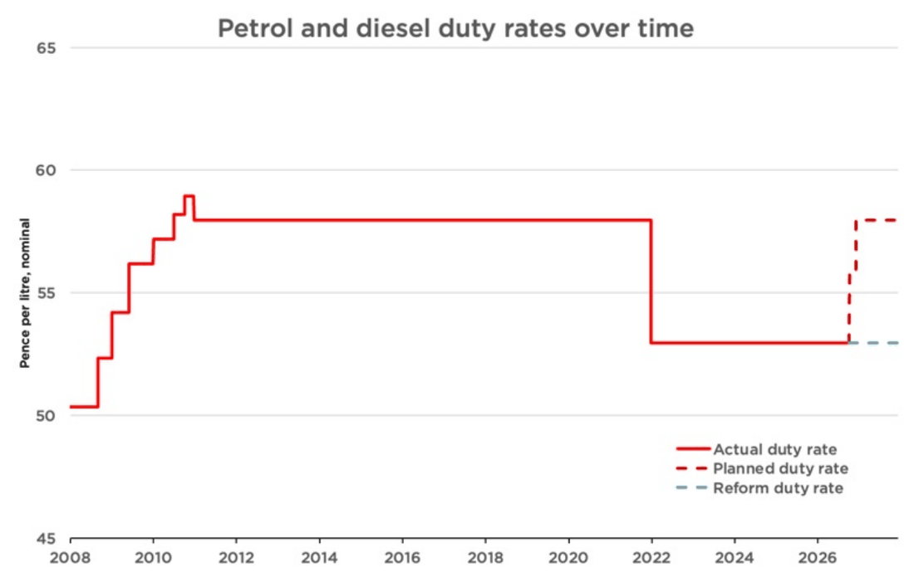
Scrap the Jobs Tax and Tax Migrant Workers Instead
Labour’s rise in employer National Insurance is a tax on taking a chance: on giving a young worker their first job, or expanding to another location. It is little surprise that job vacancies are now at a 5-year low, led by a collapse in small business hiring, and that nearly one million young people are currently not in work, education or training.19
Reform is the only major political party to commit to reversing Rachel Reeves’ jobs tax for British workers. We would cut the employer NIC rate from 15% back to 13.8%.20
This reversal would be fully funded by a new Employers’ Migrant Labour Levy. Instead of making every new hire more expensive, Reform will make it cheaper to employ a British worker, while increasing the cost of relying on low-wage imported labour. Alongside our apprenticeship programme and reversal of the Employment Rights Act, this will give firms the means and opportunity to train and hire.
As the Employers’ Migrant Labour Levy will take time to design, this change will be introduced in the second tax year of this Budget period.
No Tax on Overtime or Reservist Pay
Under Reform’s Hard Work Bonus, employees earning under £75,000 would pay no income tax on overtime worked above a 40-hour week. At no cost to employers, this tax cut would increase an employee’s net hourly pay by 25–67% if they choose to take an extra shift.
For someone working in a warehouse on an industrial estate in the North East, they could keep £700 more a year. This is based on a 40-hour contracted week, working an extra 6 hours of overtime each week. Under Reform’s policy, they would keep £2.50 extra for every hour of overtime worked.
We would also stop taxing reservist pay. That would have saved an average reservist in 2024/25 over £860.
No tax on reservists’ pay will be introduced immediately. For other workers, this measure is budgeted for implementation in the second tax year after this Economic Rescue Plan, once detailed implementation and policy work is done.
Saving Our Pubs
British pubs are integral to our community life, but are being destroyed under the weight of repeated tax increases and other regulatory measures.
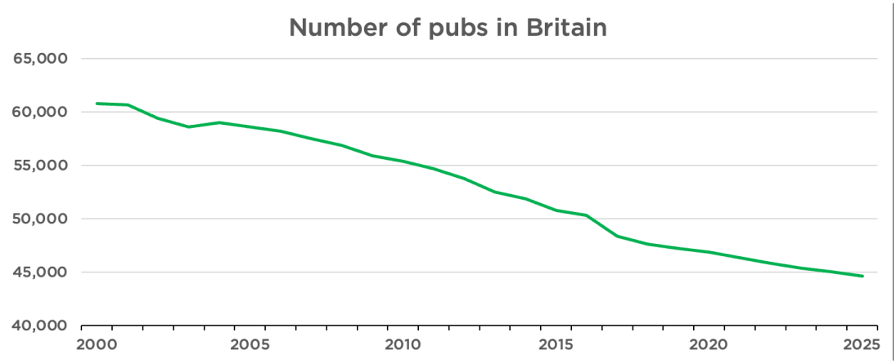
Reform treasures our pubs as a national institution and supports hardworking publicans up and down the country. In addition to already discussed measures, we would:
»Reduce VAT to 10% for pubs
»Cut beer duty by 10% in pubs
»Implement a staggered business rate abolition for all pubs
Scrapping the Death Tax on Family Farms and Family Business
In her 2024 Autumn Budget, Rachel Reeves reduced the protection given to qualifying farms and family businesses from Inheritance Tax. Under Reeves’s policy and her subsequent partial u-turn, each person gets 100% relief on only the first £2.5 million of qualifying agricultural and business assets; above that, relief falls to 50%, leaving an effective 20% inheritance-tax charge. The allowance can be transferred between spouses, giving a couple up to £5 million of full relief, but this still catches many farms and firms of relatively modest size.
Each year about 1,100 families will be hit with a higher tax bill, averaging £273,000 each by 2029/30.21 Such a bill could force a family to sell up, even if their children wanted to take over the farm or firm and even if it was a bad time to sell.
There is a good reason to treat farms and privately-held businesses differently for IHT purposes. They often spin off less cash than other investments, especially if the owner is reinvesting. This often means that a hard-earned family asset must be sold to satisfy a tax bill. However, unlike financial assets, family businesses and farms are harder to sell in pieces without making them unviable or selling at fire-sale prices. This means that the economic damage caused per pound raised from taxing such farms and firms on death is higher than for other assets, not to mention the emotional cost of forcing families to part with the farm and businesses built up by their relatives before they are ready. Moreover, these rules – when layered on top of the already high taxes that business owners pay – blunt the incentives to grow a business, especially as an owner ages.
So Reform would reverse Labour’s death tax on family farms and firms by reinstating uncapped Agricultural Property Relief and Business Property Relief. This would protect the farms and firms that families have built up over generations. This change would be implemented immediately.
Spending That Matters to You
Funding substantial tax relief while reducing the deficit requires spending cuts. We have chosen to cut spending that doesn’t help ordinary British workers: welfare to foreigners, subsidies to dead-end degrees, pointless Net Zero boondoggles, an over-manned civil service, and foreign aid. Meanwhile, we have ensured money is available to fund the priorities of the British people, including training more doctors and nurses, securing our borders, and defending the realm.
Additional Expenditure
This Economic Rescue Plan includes funding to increase the number of doctors and nurses we train in this country for the NHS. This includes uncapping medical school places and providing 0% student loans for nurses.
We have also specifically allocated funding to meet the shortfall in the Defence Investment Plan and to scrap tax on reservists’ pay. This is only the beginning of our commitment to defence expenditure, which we will lay out in more detail in the near future.
Our unallocated spending allowance — which is on top of Labour’s existing spending plans — includes ample room to meet the 3% by 2030 defence spending target. It also provides room for investment in securing our borders and making our streets safer.
Making Welfare Work
Britain’s welfare system is broken. By 2031, the non-pension welfare bill will cost each household an average of £7,000 per year to fund.22 Around one-in-ten working-age people in England and Wales are on PIP, the disability benefit.23 One-in-seven Universal Credit (UC) claimants are not British or Irish citizens.24 The number of children receiving disability benefits has doubled in just 10 years.25
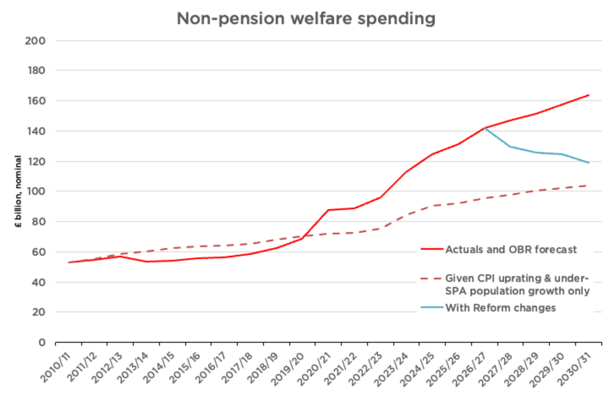
As laid out in our Making Welfare Work paper, Reform will make Britain’s welfare state work by:
1.Requiring all work-capable long-term claimants to contribute by working for their communities;
2.Making British citizenship a condition for accessing almost every form of benefit;
3.Introducing a fairer, new system of disability benefits that keeps people connected to employers and gradually removes unconditional cash support for mild cases, while protecting:
a.Those over the State Pension Age,
b.The severely disabled, who will see their cash awards protected,
c.Existing non-trivial, non-mental-health-related claimants, who will be exempt from reassessment under the new system for three years, and
d.All children currently receiving child DLA while protecting the severely disabled; and
4.Substantially tightening up fraud and error enforcement.
We will also make technical changes to indexation and reintroduce the Two-Child Benefit Cap so that parents out of work face the same choices as those in work.
Scrapping Net Zero Subsidies
Britain’s net zero project began with Tony Blair, was accelerated by Theresa May and Boris Johnson, and has since reached its job-destroying apex under Keir Starmer and Andy Burnham. Ours is now the most decarbonised major economy in the advanced world. This project never had a hope of measurably reducing global temperatures. Instead, it was a game played for the approval of foreign elites and for the satisfaction of political egos. That game has cost the Exchequer billions of pounds and thousands of British people their jobs.
Therefore, Reform would conduct a bonfire of the Net Zero vanities. This would begin with direct subsidies, industrial decarbonisation programmes, transport grants, heat networks, and land-based carbon schemes. We would also scrap the Boiler Upgrade Scheme, which gives grants towards heat pumps and biomass boilers, and all government spending on Carbon Capture and Storage programmes. We would scrap the Electric Car Grant and the Zero-Emissions Vehicle mandate. We would also end spending on Great British Energy, except for protecting nuclear investments.
We would also cut the money the government spends decarbonising its own operations. This includes hidden Net Zero spending on NHS buildings, schools, the defence estate, government offices and vehicle fleets, as well as departmental Net Zero teams, campaigns, local government schemes and taxpayer-funded Net Zero bodies. Our savings only count additional costs imposed by Net Zero requirements. For example, if a school needs to be rebuilt, we would still rebuild it; we would just remove the additional cost of meeting pointless Net Zero specifications.
These savings cover taxpayer-funded spending only. They do not include green levies added to energy bills, tax breaks or regulatory mandates. Separate parts of our programme abolish these.
Cutting Foreign Aid
Under David Cameron and George Osborne’s austerity programme, foreign aid was one of the only protected budgets. In fact, as they cut defence spending and government investment to the bone, the Conservative Party legislated a permanent 0.7% of GNI target for foreign aid spending.
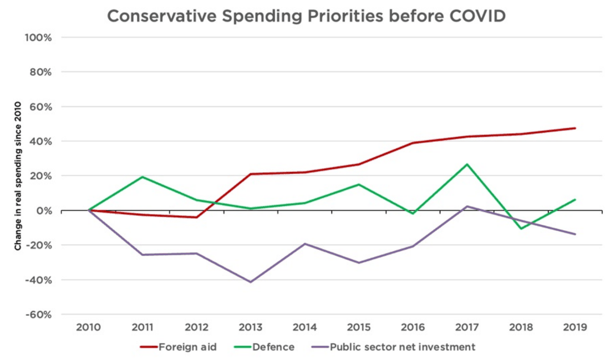
Labour has since reduced the target to 0.3% of GNI, but this remains excessive. Much ODA does not even work; indeed, many respected economists argue that aid actually keeps countries poor. Examples of aid funded by the British taxpayer since David Cameron’s 2010 pledge include:
ȣ88 million for Gaza, conveniently announced by Ed Miliband in time for the Holborn and St Pancras by-election26
»A ‘pleasure-oriented’ sex chatbot for Kenyans, as part of a £41 million sexual health package27
ȣ34 million for LGBT rights around the world28
»More than £2 million in research aid to regions of China richer than parts of the United Kingdom and more than £300,000 on reducing salt intake in China.29
Reform would cap our overseas budget at £1 billion. This would be enough to support our continued membership of international organisations that serve our national interests, to maintain aid to Ukraine, and to provide emergency humanitarian relief during disasters. Beyond this, citizens could continue to contribute voluntarily.
Shrinking QUANGOs and Civil Service
The civil service now employs more than half a million people. It is larger than when Tony Blair left office. Much of that growth has been concentrated in policy, communications, HR, and layers of management. That is not reflected in the quality of public services we receive. Whitehall is too big, too expensive, and too focused on administration over delivery.
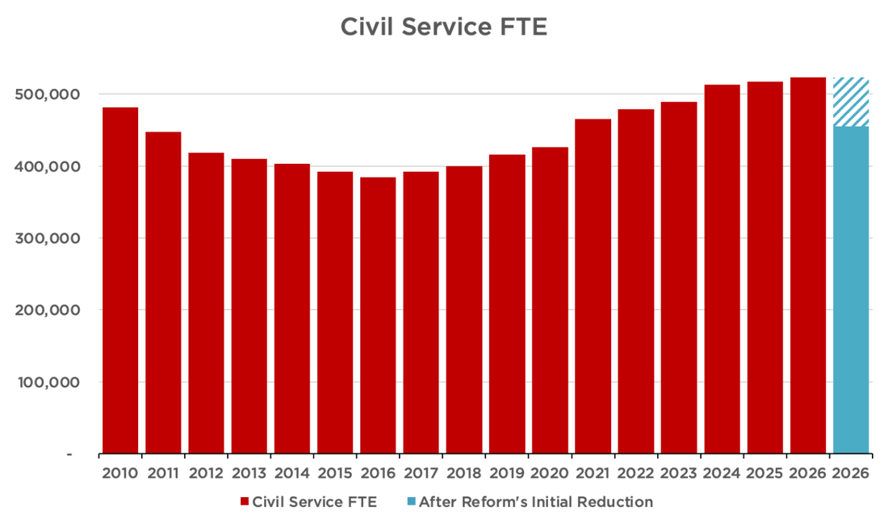
As laid out in Danny Kruger’s Storm and Sunshine paper, Reform’s plans would initially reduce civil service headcount by around 68,500 full-time equivalent roles, or 13 per cent, while protecting frontline staff.30 This would be achieved by halving the policy profession, cutting communications staff by 60 per cent and HR by around two-thirds, and making substantial reductions across other back-office and internal-facing functions, focusing especially on senior and middle managers. Departments would be given function-level spending limits rather than crude uniform headcount targets. That would allow them to decide how best to restructure while protecting operational services. These reductions would save around £4.2 billion a year in near-term cash costs, with a further £1.0 billion a year in lower future pension liabilities. We have accounted for redundancy payments. In the longer run, we will shrink the Civil Service far below its long-run average size.
We would also cut 7.5% from the budgets of Arm’s-Length Bodies overall. This does not include NHS England (which the Government is currently abolishing), Network Rail or ALBs we would scrap (e.g., GB Energy), but it includes all other ALBs. This will not necessarily be implemented as a 7.5% haircut off all budgets. Some ALBs will receive much larger cuts (up to full abolition) and others much smaller cuts, but the total quantity equals 7.5% of the ALB budget overall. This saves around £2.3 billion annually. It will be complemented by a policy to automatically sunset ALBs every five years unless Parliament approves their continued existence.
Stop Funding Dead-End Degrees
Research by the Institute for Fiscal Studies has demonstrated that over 20% of undergraduate students are financially worse off than if they had not gone to university, with the taxpayer losing money on about 40% of degrees.31
Reform UK would correct this. We would end taxpayer funding for the bottom 20% of degrees (i.e., course and university combinations) based on long-term economic outcomes. We would provide bridge funding for those currently enrolled when a course fails its assessment, allowing them to complete their studies. But we would not issue new loans for new students in such courses. However, courses which are of strategic or cultural importance may be approved despite low earnings if they are judged to provide value to the taxpayer
(e.g., training courses for teachers, nurses, midwives and other allied medical professionals will be protected).
We would also cease issuing student loans to foreign nationals and more rigorously collect outstanding loans from those based overseas. The latter change will create a substantial positive revaluation in the existing student loan book, which can be scored in the first year of the period.
Savings Summary
| Values in nominal £bn unless otherwise stated | Next FY 2027/28 | 2028/29 | Fiscal Rules target year 2029/30 | 2030/31 | 2031/32 |
|---|---|---|---|---|---|
| SAVINGS | 39.88 | 51.31 | 67.46 | 80.01 | 87.48 |
| Savings from welfare (August package) | 17.48 | 25.92 | 32.78 | 44.71 | 52.64 |
| Additional welfare measures | 2.70 | 3.21 | 3.26 | 3.24 | 3.29 |
| Scrap net zero subsidies | 8.18 | 9.56 | 10.67 | 10.22 | 8.96 |
| Shrink foreign aid | 5.80 | 6.50 | 6.80 | 7.10 | 7.40 |
| End migrant hotel spending | 1.60 | 1.70 | 1.70 | 1.80 | |
| Shrink QUANGOs and Civil Service | 2.31 | 0.67 | 6.84 | 7.02 | 7.21 |
| Reform student loans to reduce costs | 2.54 | 2.83 | 4.32 | 4.87 | 5.01 |
| Additional small measures | 0.88 | 1.03 | 1.10 | 1.16 | 1.18 |

Growing the Pie
Today, the average Briton is 30% (or £11,000) worse-off than they would have been had the pre-Blair trend of growth continued since 1997.32 Some of this is directly because the State is collecting higher taxes, but mostly it is due to anaemic economic growth.
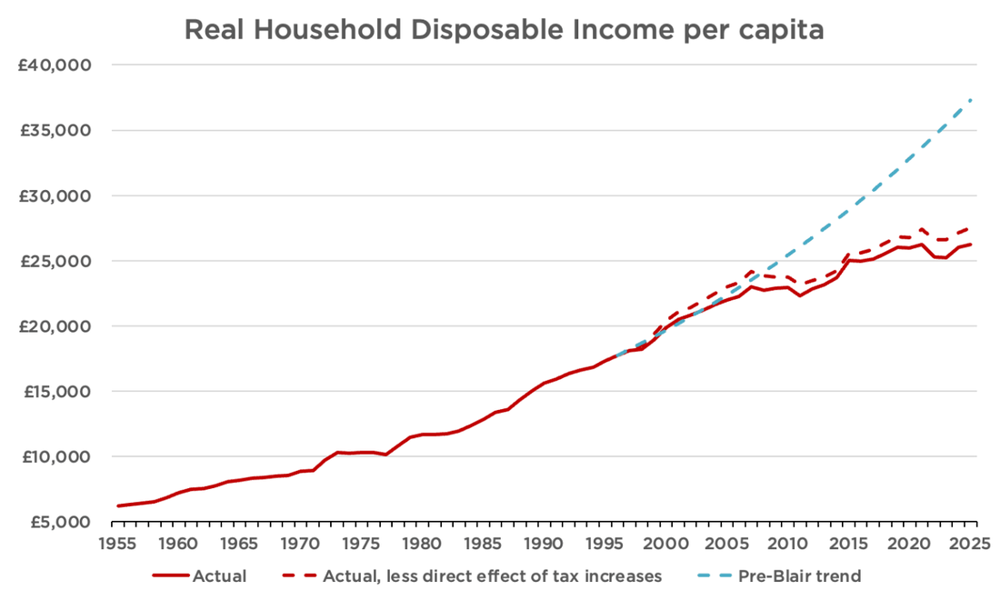
There is nothing inevitable about this underperformance. Britain remains one of the world’s largest economies, with a talented, hard-working, and entrepreneurial population, abundant natural resources, many highly productive firms, leading universities, and relatively deep capital markets. Instead, this decline results from successive governments that have actively made energy expensive, construction difficult, and employment risky, while overseeing a vast mass immigration policy.
That is why this Plan goes beyond tax and spending measures. It also features a serious programme of supply-side reform, delivered by the Treasury and Richard Tice’s Business, Trade & Energy department. These reforms would not only make the economy – and therefore tax base – larger. They also would relieve inflationary pressures across our economy, helping to reduce our world-beating interest rates. And, most importantly, they would make British workers better off and attract back young Britons who currently see their future overseas.
Over 60 Job Creating Measures
Unlocking the North Sea
Since 2010, oil and gas production in the British zone of the North Sea has collapsed. In the Norwegian sector, it has remained basically flat.33 Some of this can be explained by Britain’s head-start in exploiting the basin, but not all of it. Bad policy has prematurely throttled our oil and gas sector, taking our energy security and thousands of highly-paid Scottish jobs with it.
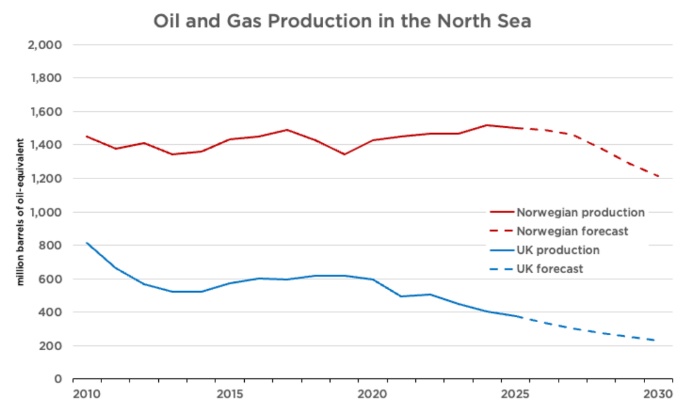
Analysis from energy consultants suggests that, compared to current forecasts, better energy policy could roughly double total oil and gas volumes recovered from the UK Continental Shelf over the next 25 years.34 That would make our economy more resilient to oil price shocks, bring down domestic gas costs, and might even reduce emissions.
Despite this immense opportunity, Labour has committed to granting no new oil and gas exploration licences. Meanwhile, punitive taxation and regulatory uncertainty have driven investment out of the already-explored parts of the North Sea. The approval of Jackdaw is good news, but it is too little, too late.
Reform UK would restore the North Sea as a major source of British energy. If we are going to use oil and gas anyway, we should produce it ourselves.
Therefore, as part of this Economic Rescue Plan, Richard Tice and I would:
1.Approve Rosebank immediately
2.Restart licensing for new oil and gas fields
3.Legalise onshore exploration in new licences
4.Abolish the Energy Profits Levy immediately
5.Return the statutory objective of the North Sea Transition Authority to maximum economic extraction, removing the net zero obligation, and revert its name to Oil & Gas Authority
Reindustrialising Britain
Britain’s remaining industry is under threat. The world’s first industrial economy may soon be an entirely non-industrial economy. British factories cannot hope to compete when they face some of the highest industrial energy prices in the developed world while competitors in America and Asia enjoy abundant, cheap, and reliable energy. Nowhere is this more evident than our capacity to refine petrol and diesel within our borders, which has collapsed over the 21st century.
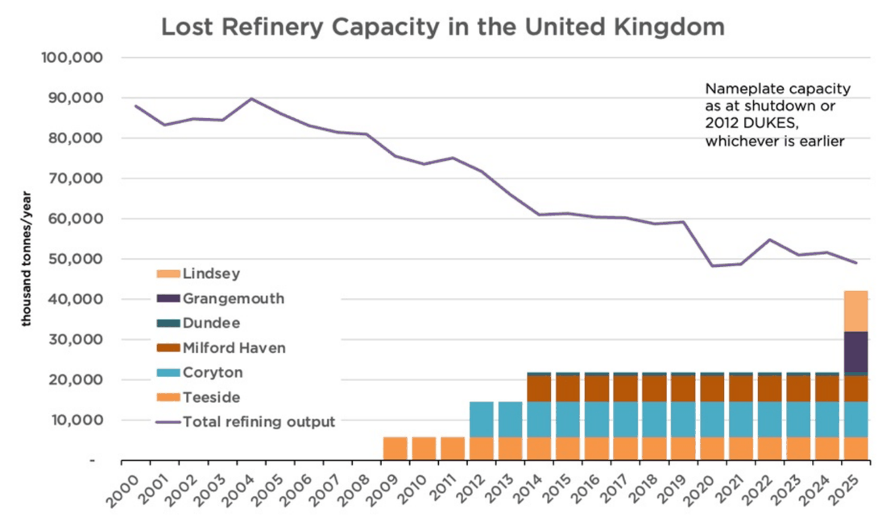
This Economic Rescue Plan would include the following measures for bringing down energy prices and reindustrialising Britain:
6.Abolish the Emissions Trading Scheme
7.Cease the implementation of the Carbon Border Adjustment Mechanism (including the fertiliser tax)
8.Repudiate the AR7 contracts for difference and scrap AR8
9.Implement the recommendations of the Fingleton Review for nuclear energy in full immediately
10.Legislate for the automatic approval of French and South Korean nuclear designs as safe
Getting Homes Built in Our Cities
Britain has a housing shortage because we do not build enough homes.
Part of the reason is our slow and uncertain planning system. This makes little sense on brownfield land, where developers already face the expense of clearing and remediating sites before navigating environmental rules, planning obligations, and years of delay. Subject to consultation, our Planning Teal Paper proposes to dramatically loosen the constraints on brownfield development.
We would also reduce the substantial costs imposed by building regulations. Building rules should impose costs proportional to the safety benefits. Building regulations should not be used to introduce additional environmental costs by stealth.
Therefore, as part of this Rescue Plan, Richard Tice and I would:
11.Reduce affordable housing requirements to 0% for brownfield developments outside of major cities and 5% for major cities
12.Implement a broad Permitted Development Right for brownfield residential development
13.Repeal Biodiversity Net Gain rules
14.Exit the Aarhus Convention
15.Repeal and reform the Habitats Regulations, including Nutrient Neutrality
16.End the ban on household boilers
17.Legalise the use of air conditioning to meet overheating requirements and prohibit cooling hierarchy rules
18.Remove mandatory Energy Performance Certificate improvements for residential and commercial buildings
19.Revoke the Future Homes Standard
20.Repeal the Renters’ Rights Act
Building Critical National Infrastructure
Britain’s broken planning and environmental laws don’t just hold up housebuilding. They also make it expensive and time-consuming to build critical national infrastructure. For instance, HS2 will cost 19 times more per mile than French high-speed rail to build. Heathrow’s third runway may cost 21 times more to deliver than a new runway at Chicago’s O’Hare airport.35 Even a mile of flat road costs £14 million to deliver in Britain, compared to £7 million in France.36 Every year, Britain’s excessive infrastructure costs waste £8.3 billion in taxpayer money.37
Many of the policies laid out above will also bring down infrastructure costs. But we will make the following specific changes:
21.Legislate planning and environmental approval for new runway projects, including Heathrow and Gatwick, including full overrides of other legislation, unlike the broken HS2 Act
22.Introduce competitive auctions for airport take-off and landing slots, starting with new and surrendered slots at Heathrow and Gatwick
23.End the use of ‘target-consistent’ carbon pricing in project evaluation
24.Prohibit consideration of carbon emissions in individual planning applications
25.Make all water reservoirs ‘Nationally Significant Infrastructure Projects’, bringing them into the national fast-track for major projects
26.Make Development Consent Orders truly a one-stop shop, by removing the requirement that the original authority agree
27.Restrict judicial review for planning decisions by the Secretary of State
28.Scrap Net Zero rules that apply during construction (e.g., National Highways’ requirement that the Lower Thames Crossing be constructed without using diesel)
29.Scrap social value test for procurement
30.Remove limits on the number of launches from SaxaVord Spaceport
31.Open the already-built sections of East-West Rail by resolving the industrial disputes
Joining the AI Revolution
AI could pose a substantial threat to Britain’s services economy. But, if we have the right policies in place, it could also be a substantial opportunity. Thanks to Brexit, Britain may well be the leading European AI centre, free from the EU’s overly harsh regulations. But that will require sensible energy and planning policies, many of which are outlined above. Reform would also adopt changes tailored to the AI opportunity:
32.Rapidly review regulatory barriers in the way of AI adoption across the economy
33.Explicitly permit on-location dispatchable generation (including gas engines or turbines) for industrial developments, including data centres
Reducing the Cost of Hiring British Workers
A growing economy requires businesses to take a chance on hiring people. Yet successive governments have chosen to make employing somebody new evermore expensive and risky.
This has been accelerated under Labour, with Angela Rayner’s so-called Employment Rights Act. One section of the Act alone – which requires businesses to allow trade unions onto their premises, even if they are not affiliated – could cost SMEs £600 million.38
After accounting for productivity growth, British workers have become 46% more expensive to employ compared to 2015. American workers, meanwhile, are only 28% more expensive.
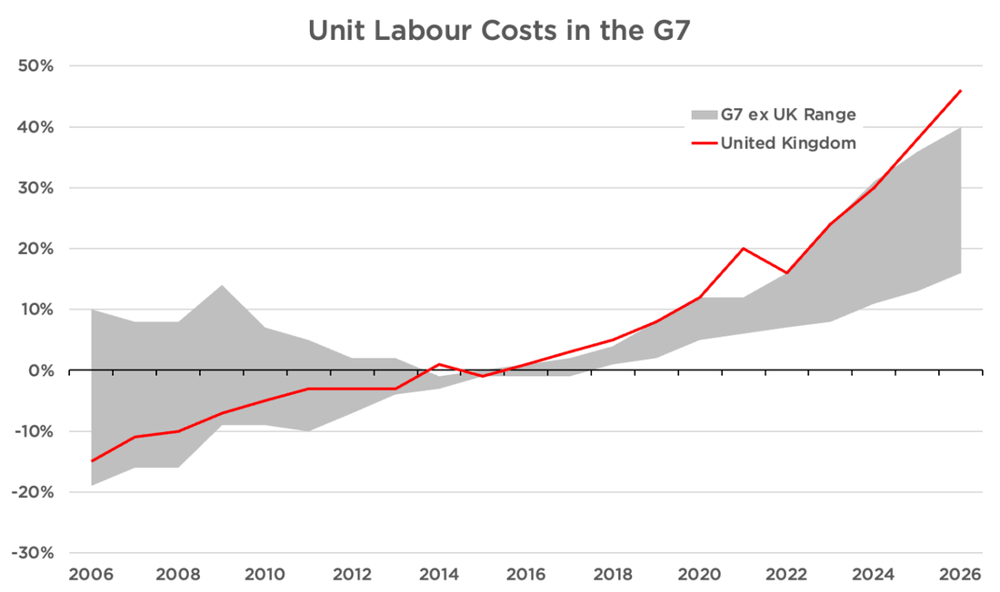
To make it attractive for British businesses to hire British workers again, we would include the following measures in our Economic Rescue Plan:
34.Return the Employer National Insurance rate to 13.8% for British workers, down from Rachel Reeves’s 15%
35.Introducing a migrant worker levy to reduce the incentive to hire low-skilled foreign workers, instead of investing in British workers or automation
36.Repeal Angela Rayner’s ruinous Employment Rights Act, including mandatory trade union access
37.Clarify that ‘reasonable steps’ to protect workplace rights do not require mandatory training courses
38.Reform the CSCS system for tradesmen, allowing experienced tradesmen to use their experience in lieu of a qualification on government contracts and opening the system up to competition
Unleashing the City to Invest in the Real Economy
The credit crunch for British business didn’t end in 2011. After adjusting for inflation, private business credit today in the UK is still 15% lower than its 2008 peak. By contrast, in the US, business credit had recovered by 2011.39
This has hit small businesses particularly hard: In 2024, Britain’s banks had £179 billion – or 6.2% of GDP – in loans outstanding to small and medium businesses. Despite years of inflation and some economic growth, that is down from 2011, when banks had £189 bn in outstanding SME loans – or 11.3% of GDP.
A lack of credit means a lack of financial firepower to fund investment or expansion. It can also destroy businesses that face temporary cash flow shortfalls. Therefore, this Economic Rescue Plan includes measures to free up Britain’s banks to lend to the real economy:
39.Review capital requirements on banks to encourage lending to the real economy
40.Send a remit letter to Britain’s financial regulators, including the Bank of England and Financial Conduct Authority, ruling out Net Zero considerations
41.Repeal climate-related financial disclosures rules
Getting Motorists Moving
Almost 60% of all journeys are taken by car. And over 80% of internal freight movement within the United Kingdom is by road. A better, faster road network is vital for prosperity. Despite this, motorists and lorry-drivers have been de-prioritised, behind virtue-signalling by national and local politicians. Reform will put them first. We will make the 5p cut to fuel duty permanent, and get Britain’s roads moving again, through the following measures:
42.Remove the requirement that airports have ‘surface access strategies’ to reduce car traffic, thereby reducing the pressure on parking and drop-off fees
43.Abolish the electric and hybrid vehicle mandates that ban new pure-internal combustion cars by 2030 and all non Zero-Emission vehicles, including vans, by 2035
44.Allow all HGV trips inside the United Kingdom to be subject to domestic GB hours
45.Prohibit Low-Traffic Neighbourhoods
46.Provide UK Treasury or British Sovereign Wealth Fund support to the Welsh Government to get the M4 Relief Road built
47.Move the requirement for a new car’s first MOT from three years to four in Great Britain, in line with Northern Ireland and European norms
48.Abolish the Renewable Transport Fuel Obligation
Using Brexit Freedoms
Britain voted to leave the European Union more than 10 years ago. Despite this, 61% – or 4,221 pieces – of EU law remains in place unchanged. This was meant to be resolved under the last Conservative government by the Retained EU Law Act, but Kemi Badenoch – the Business Secretary responsible – bottled it. She scrapped the sunset clause, which was to revoke all remaining EU law by 2023. In the end, rather than the 4,000 plus laws due to be scrapped, only 700 actually were.
As part of this Rescue Plan, Reform would finish the job. As noted above, we would reform the biodiversity net gain and nutrient neutrality rules that are holding up housebuilding. We would also:
49.Replace the GDPR with a New Zealand-style Privacy Act that retains adequacy
50.Fully re-legalise the use of Imperial units
51.Review all unchanged EU law and repeal or modify all that which does not match the UK’s circumstances
52.Automatically repeal all remaining unchanged EU law in 5 years, unless a specific decision is taken to retain it under an affirmative procedure
General Deregulatory Measures
This Economic Rescue Plan would also include specific measures to reduce the burden on small businesses:
53.Make quarterly reporting voluntary under Making Tax Digital
54.Reduce the legal obligations on Non-Executive Directors for small and medium enterprises
We will also reintroduce freedoms that were successfully introduced during the Covid pandemic and have since been revoked.
55.Double the number of days land can be used for events, markets and other activities without planning permission from 28 to 56 days annually
56.Grant pavement dining licences automatically and make them permanent unless revoked, rather than automatically expiring after 2 years
57.Generally permit shops to stay open until 10pm, except on Sundays
Finally we will adopt a number of general deregulatory measures that are not otherwise covered.
58.Repeal board diversity and inclusion rules
59.Remove the mandate for Sustainable Aviation Fuel
60.Abolish Extended Producer Responsibility (the so-called packaging tax)
61.Scrap the preference for the BBC and Channel 4 on YouTube and other streaming sites
62.Remove the Public Sector Equality Duty
63.Adopt a five-year regulatory sunset on all existing QUANGOs, requiring them to justify their existence or be automatically abolished
64.Require all new regulations to have a sunset clause within 5 years, with a post-implementation review completed before the sunset, forcing ministers to actively re-commit to new rules
Indicative Fiscal Plan
Our indicative fiscal plan is based on the March 2026 Economic and Fiscal Outlook from the Office for Budget Responsibility. We have adjusted for the subsequent increase in interest rates to reach an opening headroom, based on Labour’s policies. Individual line items are costed using an in-house tax and transfer model. Policy phasing and sequencing may be altered based on the economic situation facing a Reform government upon election, with the exception of ‘First 100 Days’ pledges.
Fiscal Rules
With the timing of the next General Election not yet certain, it would not be prudent to commit to fiscal rules for a future Reform government today. We certainly will have them, as they are a necessary disciplining device and commitment signal. However, we may adjust their structure, as previous rules have failed to actually constrain the expansion in debt.40
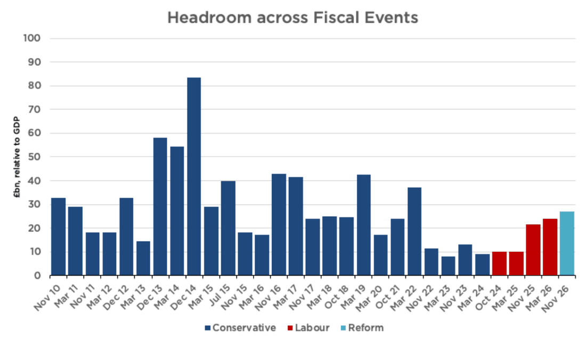
For the purpose of this Economic Rescue Plan, we have measured our plans against the fiscal rules that John Healey is facing. Against his rules – and taking into account the deterioration due to higher interest rates – this plan delivers the highest headroom since 2022.
| Values in nominal £bn unless otherwise stated | Current FY 2026/27 | Next FY 2027/28 | 2028/29 | Fiscal Rules target year 2029/30 | 2030/31 | 2031/32 |
|---|---|---|---|---|---|---|
| STARTING FISCAL AGGREGATES | ||||||
| Public sector net borrowing | 115.46 | 96.47 | 86.02 | 63.40 | 59.02 | |
| Current budget deficit | 33.92 | 4.56 | (3.29) | (23.56) | (30.29) | |
| Public sector net financial liabilities | 2,661.17 | 2,764.98 | 2,859.15 | 2,931.53 | 2,999.23 | |
| Starting headroom | ||||||
| Against deficit rule | 23.56 | 30.29 | ||||
| Against balance sheet rule | 27.06 | 38.40 | ||||
| Post-EFO adjustments | ||||||
| Increase in borrowing costs | (0.97) | (2.92) | (4.91) | (6.61) | (8.16) | |
| Post-adjustment headroom | ||||||
| Against deficit rule | 16.96 | 22.13 | ||||
| Against balance sheet rule | 20.45 | 30.24 | ||||
| MEASURES | ||||||
| REVENUE | (26.74) | (32.47) | (35.52) | (37.51) | (39.68) | |
| Personal Allowance to £15k | (18.33) | (18.99) | (19.67) | (20.37) | (21.09) | |
| Cut energy bills by £250 | (4.92) | (4.70) | (6.86) | (6.91) | (7.01) | |
| Make 5p fuel duty cut permanent | (2.08) | (2.07) | (2.06) | (2.05) | (2.03) | |
| Increase VAT threshold | (1.48) | (1.64) | (1.74) | (1.84) | (1.95) | |
| Abolish North Sea windfall tax | (1.17) | (0.78) | (0.44) | |||
| Less additional revenue from North Sea | 0.09 | 0.28 | 0.46 | 0.63 | 0.67 | |
| Abolish family farms and business tax | (0.18) | (0.19) | (0.19) | (0.19) | (0.20) | |
| Reverse Rachel Reeves' employer NI increase | (7.14) | (6.96) | (6.76) | (6.77) | ||
| Introduce Migrant Workers Levy | 7.14 | 6.96 | 6.76 | 6.77 | ||
| No Tax on Overtime (Hard Work Bonus) | (0.04) | (4.44) | (6.04) | (7.44) | (8.54) | |
| including No Tax on Reservists' Pay | (0.04) | (0.04) | (0.04) | (0.04) | (0.04) | |
| Save Our Pubs Package | (2.58) | (2.64) | (2.95) | (3.04) | ||
| Increased immigration fees | 1.36 | 2.62 | 3.64 | 3.60 | 3.52 | |
| SAVINGS | 39.88 | 51.31 | 67.46 | 80.01 | 87.48 | |
| Savings from welfare (August package) | 17.48 | 25.92 | 32.78 | 44.71 | 52.64 | |
| Additional welfare measures | 2.70 | 3.21 | 3.26 | 3.24 | 3.29 | |
| Scrap net zero subsidies | 8.18 | 9.56 | 10.67 | 10.22 | 8.96 | |
| Shrink foreign aid | 5.80 | 6.50 | 6.80 | 7.10 | 7.40 | |
| End migrant hotel spending | 1.60 | 1.70 | 1.70 | 1.80 | ||
| Shrink QUANGOs and Civil Service | 2.31 | 0.67 | 6.84 | 7.02 | 7.21 | |
| Reform student loans to reduce costs | 2.54 | 2.83 | 4.32 | 4.87 | 5.01 | |
| Additional small measures | 0.88 | 1.03 | 1.10 | 1.16 | 1.18 | |
| SPECIFIC EXPENDITURE INCREASES | (1.93) | (1.26) | (1.28) | (1.36) | (5.52) | |
| Fund the Defence Investment Plan | (1.80) | (1.10) | (1.00) | (0.90) | (4.70) | |
| Train our own doctors and nurses | (0.13) | (0.16) | (0.28) | (0.46) | (0.82) | |
| ADDITIONAL SPENDING incl. Home Office and Defence | (10.00) | (10.00) | (15.00) | (15.00) | (15.00) | |
| Memo: Cost of defence to 3% by 2029/30 | 3.33 | 6.90 | 10.70 | |||
| Change in primary balance | 1.21 | 7.58 | 15.67 | 26.15 | 27.28 | |
| Change in interest expense | 0.03 | 0.26 | 0.88 | 1.98 | 3.39 | |
| REDUCTION IN PSNB | 1.24 | 7.85 | 16.54 | 28.13 | 30.66 | |
| of which capital | 5.48 | 6.46 | 6.91 | 6.30 | 6.55 | |
| REDUCTION IN CURRENT DEFICIT | (4.24) | 1.39 | 9.63 | 21.83 | 24.11 | |
| CLOSING FISCAL AGGREGATES | ||||||
| Public sector net borrowing | 95.23 | 78.17 | 46.86 | 30.89 | ||
| Change vs government | -1% | -9% | -26% | -48% | ||
| Current budget deficit | 8.80 | (4.67) | (33.20) | (52.12) | ||
| Public sector net financial liabilities | 2,763.74 | 2,850.07 | 2,905.90 | 2,945.47 | ||
| % of GDP | 83% | 83% | 81% | 80% | ||
| Δ as % of GDP | 0% | -1% | -2% | |||
| Post-adjustment, Reform headroom | ||||||
| Against deficit rule | 26.59 | |||||
| Against balance sheet rule | 36.68 | |||||

Conclusion
Labour – and many in the press – allege that Britain must choose between ever-higher taxes and ever-higher borrowing. But these are not the only options available. With sufficient political courage, we can cut the spending and end the economic stagnation that created our fiscal problems in the first place. That would allow us to reduce borrowing and cut taxes at the same time. That is what this Economic Rescue Plan achieves.
Our tax priorities are simple: We would raise the Personal Allowance to £15,000, cut household energy bills, make the 5p fuel-duty cut permanent, reverse Labour’s Jobs Tax for British workers and provide further relief for small businesses, pubs, farms and family firms. These are tax cuts firmly focused on the tight budgets of ordinary British families.
To pay for it, we would reform a welfare system that rewards joblessness and has become far too expensive. We would end billions of pounds of Net Zero subsidies, slash foreign aid, shrink the bloated Whitehall machine, and end the subsidies for dead-end degrees.
But fiscal responsibility alone will not make Britain prosperous. For decades, governments of both parties have chosen to make energy expensive, housing hard to build, and workers risky to hire. Reform would reverse that failure. We would unlock the North Sea, cut industrial energy costs, loosen the grip of the planning system and make it easier for British businesses to employ British workers. That will make us rich again.
For too long, Britain has been governed on the assumption that decline is inevitable: that taxes must rise, debt must rise, public services must deteriorate and living standards must stagnate. We reject that assumption. Britain has all the resources, people and institutions needed to prosper. It has not had a governing elite willing to make hard choices. That is why Britain is broken.
This Rescue Plan is our alternative to managed decline: spend less, tax less, borrow less, and let Britain grow again.
Endnotes
- https://www.ons.gov.uk/economy/inflationandpriceindices/timeseries/doam/mm23, https://ahdb.org.uk/beef-lamb-pork/supermarket-red-meat-prices, https://www.ons.gov.uk/economy/inflationandpriceindices/timeseries/l797/mm23, https://www.ons.gov.uk/economy/inflationandpriceindices/timeseries/l78j/mm23 ↩
- https://ahdb.org.uk/beef-lamb-pork/supermarket-red-meat-prices ↩
- Although the average price is 37p. https://thefreddoindex.com ↩
- https://www.ons.gov.uk/economy/inflationandpriceindices/timeseries/dobi/mm23, https://www.ons.gov.uk/economy/inflationandpriceindices/timeseries/czms/mm23 ↩
- https://www.centreforsocialjustice.org.uk/newsroom/revealed-almost-two-million-foreign-nationals-receiving-benefits-or-state-pension ↩
- As measured by real household disposable income (RHDI) per capita. ↩
- OBR, Policy measures databank (September 2026) ↩
- OBR, March 2026 Economic and Fiscal Outlook, Tables 3.17-3.18 ↩
- Conservative Party manifestos 2010 (p.21), 2015 (p.29), 2017 (p.54), 2019 (p.20), 2024 (p.37) ↩
- David Cameron, speech on immigration, 14 April 2011 ↩
- ONS, Long-term international migration, provisional: YE December 2025 ↩
- Jonathan Leake, ‘Net zero blamed as British factories pay nearly twice as much as France for electricity’, The Telegraph (22 February 2026) ↩
- Prosperity Institute, Good Money After Bad. ↩
- DESNZ, Industrial gas prices in the IEA (QEP 5.7.1). ↩
- ONS, Business insights and impact on the UK economy: 20 August 2026. ↩
- Peter Foster, ‘UK’s ability to make medicines and missiles hit by decline of chemicals industry’, Financial Times (4 August 2026); Reuters, ‘UK losing jobs abroad due to high energy costs, manufacturers and union warn’ (15 June 2026). ↩
- Options include repeal of the entire scheme, abolishing the surrender obligation, or flooding the market with allowances. ↩
- OBR, The impact of the frozen VAT registration threshold ↩
- BBC News, Job vacancies at five-year low as smaller firms scale back recruitment (18 August 2026). ↩
- Under our Making Welfare Work package, firms could also receive an additional NICs cut in exchange for managing employee disabilities. However, no firm with fewer than 6 employees would face obligations under this package. ↩
- House of Commons Library, Changes to agricultural and business property reliefs for inheritance tax. ↩
- OBR, March 2026 Economic and Fiscal Outlook, p. 70. Household count is 29mn in 2025 (ONS, Families and households in the UK: 2025) and 30.2mn in 2031, adjusted for OBR forecast population growth. ↩
- DWP, Personal Independence Payment: Official Statistics to January 2026; ONS, Estimates of the population for England and Wales. ↩
- DWP, Universal Credit statistics, 29 April 2013 to 12 June 2025. ↩
- Resolution Foundation, Growing pressures: Exploring trends in children’s disability benefits. ↩
- Gov.UK, ‘UK announces major package of support for humanitarian relief and early recovery in Gaza’ ↩
- Hayley Dixon, ‘British taxpayers fund Kenyan sex chatbot’, The Telegraph (30 December 2025) ↩
- Gov.UK Development Tracker, ‘DFID aidmatch 2019/20 - Nepal’ ↩
- Institute of Economic Affairs, Robin Hood in Reverse: Foreign aid spending in regions that are richer than parts of the UK, p. 7–8. TaxPayers’ Alliance, ‘Submission to the international development committee inquiry on effectiveness of UKAID’. ↩
- Our welfare plan may lead to an increase in DWP staff to manage the re-assessment process. The administrative costs of this are accounted for in the welfare package. These reductions are therefore gross reductions. ↩
- Institute for Fiscal Studies, New estimates of the impact of undergraduate degrees on lifetime earnings ↩
- As measured by real household disposable income per capita. ↩
- Adam Smith Institute, The Growth Agenda, p. 42 ↩
- Westwood Global Energy Group, ‘Potential of the UKCS under different scenarios’. ↩
- Centre for Policy Studies, Lowering Infrastructure Costs, p. 10. ↩
- Boston Consulting Group, Reshaping British Infrastructure: Global Lessons to Improve Project Delivery ↩
- Britain Remade and Centre for British Progress, Building More for Less: A cost-free path to European levels of investment ↩
- Adam Smith Institute, Knock, Knock: The Effects of the New Union Access Regime on SMEs, p. 4. ↩
- Institute of Economic Affairs, ‘The Never-Ending Credit Crunch’, p. 7 ↩
- Centre for Policy Studies, Britain’s Broken Budgets, p. 6 ↩
Promoted by Reform UK, Millbank Tower, 21-24 Millbank, SW1P 4QP.